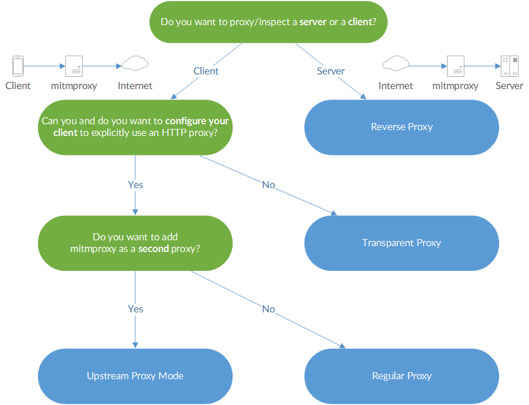

Mitmproxy has four modes of operation that allow you to use mitmproxy in a variety of scenarios:
Now, which one should you pick? Use this flow chart:

Mitmproxy's regular mode is the simplest and the easiest to set up.
If you are proxying an external device, your network will probably look like this:

The square brackets signify the source and destination IP addresses. Your client explicitly connects to mitmproxy and mitmproxy explicitly connects to the target server.
In transparent mode, traffic is directed into a proxy at the network layer, without any client configuration required. This makes transparent proxying ideal for situations where you can't change client behaviour. In the graphic below, a machine running mitmproxy has been inserted between the router and the internet:

The square brackets signify the source and destination IP addresses. Round brackets mark the next hop on the Ethernet/data link layer. This distinction is important: when the packet arrives at the mitmproxy machine, it must still be addressed to the target server. This means that Network Address Translation should not be applied before the traffic reaches mitmproxy, since this would remove the target information, leaving mitmproxy unable to determine the real destination.

There are many ways to configure your network for transparent proxying. We'll look at three common scenarios:
In most cases, the first option is recommended due to its ease of use.
One simple way to get traffic to the mitmproxy machine with the destination IP intact, is to simply configure the client with the mitmproxy box as the default gateway.
In this scenario, we would:
Configure the proxy machine for transparent mode. You can find instructions in the Transparent Proxying section of the mitmproxy docs.
Configure the client to use the proxy machine's IP as the default gateway. Here is what this would look like on IOS.
Quick Check: At this point, you should already be able to visit an unencrypted HTTP site over the proxy.
Open the magic domain mitm.it and install the certificate for your device.
Setting the custom gateway on clients can be automated by serving the settings out to clients over DHCP. This lets set up an interception network where all clients are proxied automatically, which can save time and effort.
Incorrect transparent mode configurations are a frequent source of error. If it doesn't work for you, try the following things:
In some cases, you may need more fine-grained control of which traffic reaches the mitmproxy instance, and which doesn't. You may, for instance, choose only to divert traffic to some hosts into the transparent proxy. There are a huge number of ways to accomplish this, and much will depend on the router or packet filter you're using. In most cases, the configuration will look like this:

Mitmproxy is usually used with a client that uses the proxy to access the Internet. Using reverse proxy mode, you can use mitmproxy to act like a normal HTTP server:
There are various use-cases:
Say you have an internal API running at http://example.local/. You could now set up mitmproxy in reverse proxy mode at http://debug.example.local/ and dynamically point clients to this new API endpoint, which provides clients with the same data and you with debug information. Similarly, you could move your real server to a different IP/port and set up mitmproxy at the original place to debug all sessions.
Say you're a web developer working on example.com (with a development version running on localhost:8000). You can modify your hosts file so that example.com points to 127.0.0.1 and then run mitmproxy in reverse proxy mode on port 80. You can test your app on the example.com domain and get all requests recorded in mitmproxy.
Say you have some toy project that should get SSL support. Simply set up
mitmproxy with SSL termination and you're done (mitmdump -p 443 -R
https2http://localhost:80/). There are better tools for this specific
task, but mitmproxy is very quick and simple way to set up an SSL-speaking
server.
Want to add a non-SSL-capable compression proxy in front of your server? You could even spawn a mitmproxy instance that terminates SSL (https2http://...), point it to the compression proxy and let the compression proxy point to a SSL-initiating mitmproxy (http2https://...), which then points to the real server. As you see, it's a fairly flexible thing.
Note that mitmproxy supports either an HTTP or an HTTPS upstream server, not both at the same time. You can work around this by spawning a second mitmproxy instance.
mitmproxy -R http://google.com/
This works for the initial request, but the HTML served to the client remains
unchanged. As soon as the user clicks on an non-relative URL (or downloads a
non-relative image resource), traffic no longer passes through mitmproxy, and
the client connects to Google directly again.
If you want to chain proxies by adding mitmproxy in front of a different proxy appliance, you can use mitmproxy's upstream mode. In upstream mode, all requests are unconditionally transferred to an upstream proxy of your choice.
mitmproxy supports both explicit HTTP and explicit HTTPS in upstream proxy mode. You could in theory chain multiple mitmproxy instances in a row, but that doesn't make any sense in practice (i.e. outside of our tests).
{kind=link}
{kind=link}
{kind=link}
{kind=link}
{kind=link}